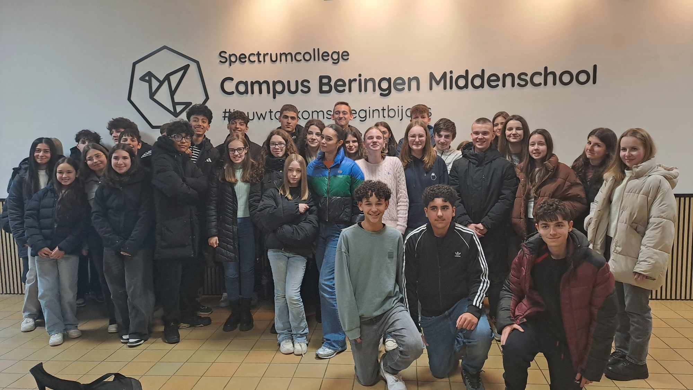
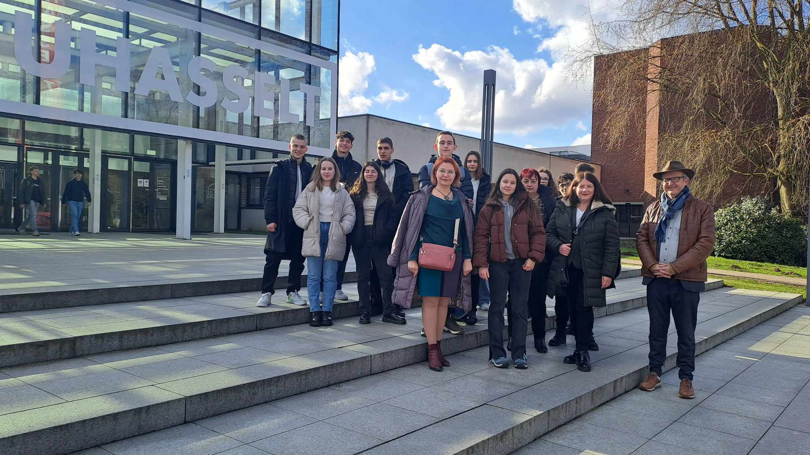
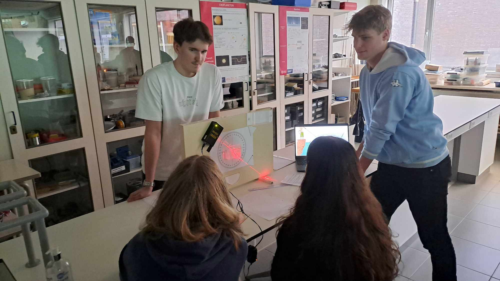
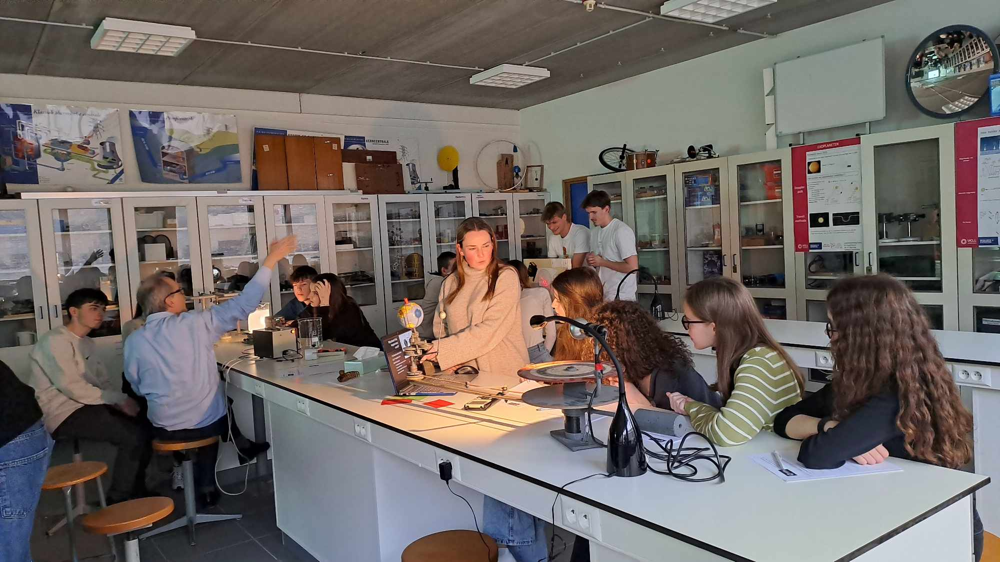
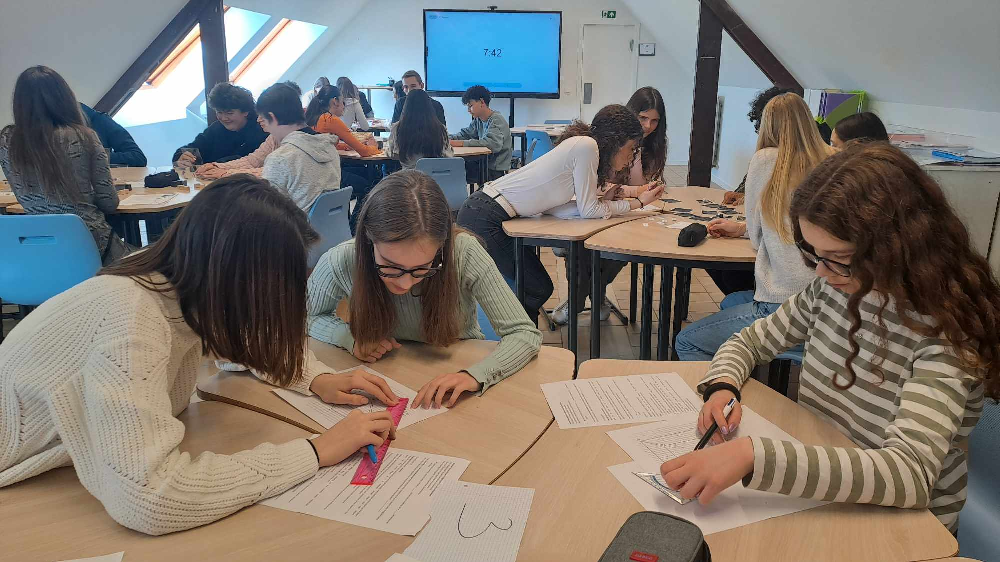

We discover science - physical experiments without borders within the framework of mobility under the Erasmus+ Program

Science is all around us - in the smallest particles of matter, in the sounds we hear, and in the light that surrounds us. As part of our Erasmus+ Mobility programme, students and faculty embarked on captivating project activities related to quantum physics, the relationship between physics and music, the interaction between light and matter. Seventeen students from PPMG "Acad. Ivan Tsenov participated in lectures, simulations and hands-on experiments that were hosted by our partners from the UCLL University of Applied Sciences in Dieppenbeck, Belgium.
One of the main topics was quantum physics - the branch of science that shows us that the world on a microscopic level behaves in a way completely different from classical physics. Under the skillful guidance of university professors, Bulgarian students compared theoretical and experimental results using an experimental setup involving a tube through which electrons pass and a graphite plate, whose cells are sized similar to the size of electrons. The phenomenon of electron diffraction was observed, then the values of the wavelength magnitude were calculated in two ways - through a theoretical formula and through a formula involving experimental results.
The topic of "Physics and music" was a great interest. Students explored how physics and music are connected by conducting experiments with sound waves, frequencies, and resonance. The topic of how different musical instruments generate sound and what physical laws determine their timber is also considered. And after the theoretical part was followed by a creative performance in which our students demonstrated their talent through several musical performances on piano, guitar and drums.
The team work continued with experiments with optics in the "Physics and Light" module, which proved that light is not only a basic element of our everyday lives, but also the subject of in-depth scientific research. Light dispersion, interference and diffraction were studied through laboratory exercises. Through simple but effective experiments, it was clearly shown why light moves in a straight line, how light can be separated into spectral colors using prisms, and how solar and lunar eclipses are achieved. The light refraction index, as well as the nature of the reflecting telescopes, were clearly explained.
As part of the work program, the Bulgarian team visited the Belgian school Spectrumcollege, Beringen, where students participated in STEM-themed project activities. The work took place in mixed teams, which solved logical and mathematical problems, with an emphasis on practical learning. In the Energy Sources workshop, organized and conducted by Bulgarian students, our Belgian partners got acquainted with the different types of renewable energy sources, then answered questions on the topic. They also joined the interactive card game aimed at consolidating the gained knowledge of the meaning of clean energy. In addition to acquiring new knowledge, our students also developed teamwork skills, critical thinking, and a scientific approach to problem-solving.
This mobility, which is under Project No. 2024-1-BG01-KA121-SCH-000202833, in conjunction with Erasmus Accreditation for School Education KA-121-SCH, has not only expanded the scientific knowledge of students but also inspired them to explore the world around them with curiosity and enthusiasm. Through the relationship between physics, music, and light, participants realized that science is not just a theory but a living and dynamic field that can be explored through experimentation and creativity.